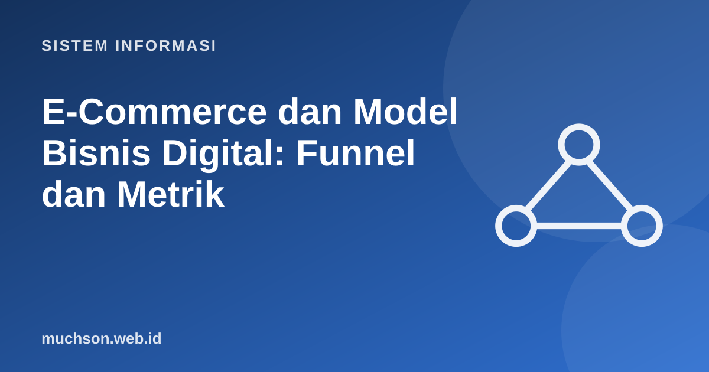

Beranda › Artikel › Sistem Informasi
Sistem InformasiE-Commerce dan Model Bisnis Digital: Funnel, Metrik, Pembayaran
E-commerce bukan sekadar toko online; ia adalah sistem informasi yang menghubungkan katalog, pesanan, pembayaran, logistik, dan layanan pelanggan. Memahami model bisnisnya, dan metrik yang menunjukkan sehat tidaknya, membantu merancang sistem yang benar-benar mendukung bisnis.
Sebaiknya sudah paham: jenis-jenis SI

Tujuan belajar
Setelah membaca dan mencoba materi ini, Anda mampu:
- membedakan model e-commerce B2C, B2B, C2C, D2C, dan marketplace
- menggambarkan alur pesanan dan komponen sistem e-commerce
- menganalisis funnel konversi dan menemukan titik kebocoran
- menghitung AOV, CAC, LTV, dan margin kontribusi
- menjelaskan metode pembayaran digital umum di Indonesia
Model e-commerce
| Model | Pelaku | Contoh |
|---|---|---|
| B2C | Bisnis ke konsumen | Toko brand di situs sendiri |
| B2B | Bisnis ke bisnis | Pasokan bahan baku antarperusahaan |
| C2C | Konsumen ke konsumen | Jual-beli barang bekas lewat platform |
| D2C | Produsen langsung ke konsumen | Merek lokal menjual tanpa perantara |
| Marketplace | Platform mempertemukan banyak penjual dan pembeli | Tokopedia, Shopee, Bukalapak |
| Langganan | Pembayaran berulang untuk akses | Layanan perangkat lunak (SaaS), kotak langganan |
Anatomi sistem e-commerce
Funnel konversi
Funnel menggambarkan perjalanan pelanggan dan di mana mereka berguguran. Setiap tahap adalah peluang perbaikan sistem.
funnel = [("Kunjungan situs", 10000), ("Melihat produk", 4200), ("Menambah ke keranjang", 900), ("Memulai checkout", 520), ("Membayar", 310)]
sebelumnya = None
print(f"{'tahap':<24}{'jumlah':>8}{'dari tahap sebelumnya':>24}{'dari awal':>11}")
for nama, n in funnel:
prop = "" if sebelumnya is None else f"{n / sebelumnya * 100:.1f}%"
print(f"{nama:<24}{n:>8}{prop:>24}{n / funnel[0][1] * 100:>10.1f}%")
sebelumnya = n
# tahap dengan kebocoran terbesar (relatif)
bocor = max(range(1, len(funnel)), key=lambda i: 1 - funnel[i][1] / funnel[i-1][1])
print("\nkebocoran relatif terbesar:", funnel[bocor-1][0], "->", funnel[bocor][0])tahap jumlah dari tahap sebelumnya dari awal
Kunjungan situs 10000 100.0%
Melihat produk 4200 42.0% 42.0%
Menambah ke keranjang 900 21.4% 9.0%
Memulai checkout 520 57.8% 5.2%
Membayar 310 59.6% 3.1%
kebocoran relatif terbesar: Melihat produk -> Menambah ke keranjang
Metrik unit economics
| Metrik | Rumus | Arti |
|---|---|---|
| Conversion rate | Pembeli / pengunjung | Seberapa efektif situs mengubah kunjungan menjadi pembelian |
| AOV (average order value) | Total pendapatan / jumlah pesanan | Rata-rata nilai satu pesanan |
| CAC (customer acquisition cost) | Biaya pemasaran / pelanggan baru | Biaya mendapatkan satu pelanggan |
| LTV (lifetime value) | Margin per pesanan × pesanan per tahun × lama berlangganan | Laba total dari satu pelanggan selama hubungan |
| Rasio LTV : CAC | LTV / CAC | Aturan praktis: di atas 3 dianggap sehat |
Pembayaran digital
| Metode | Cara kerja | Catatan |
|---|---|---|
| QRIS | Standar kode QR pembayaran nasional dari Bank Indonesia; satu kode untuk berbagai aplikasi dompet dan bank | Biaya merchant rendah untuk usaha mikro; cocok untuk toko fisik dan online |
| Transfer bank dan virtual account | Nomor rekening unik per pesanan; pembayaran terverifikasi otomatis | Populer; perlu batas waktu pembayaran |
| Dompet digital | Saldo dalam aplikasi (GoPay, OVO, DANA, dan lainnya) | Pengalaman cepat, perlu integrasi payment gateway |
| Kartu dan cicilan | Kartu debit/kredit; pay later | Biaya lebih tinggi; kepatuhan keamanan data kartu (PCI DSS) |
| COD (bayar di tempat) | Pembayaran saat barang tiba | Risiko penolakan paket dan biaya retur |
Keamanan pembayaran
Gunakan payment gateway berizin agar data kartu tidak melewati server Anda. Itu mengurangi beban kepatuhan dan risiko keamanan secara signifikan. Jangan pernah menyimpan nomor kartu dan kode CVV sendiri.
Latihan mandiriCoba kerjakan dulu sebelum membuka jawaban.
1. Funnel: 5.000 pengunjung, 250 menambah keranjang, 100 membayar. Berapa conversion rate?
100 / 5.000 = 2%.
2. Jika AOV Rp200.000, margin 25%, dan CAC Rp40.000, apakah pesanan pertama menutup CAC?
Margin per pesanan = Rp50.000 > Rp40.000: ya, dengan sisa Rp10.000.
3. Sebutkan tiga cara menurunkan tingkat pengabaian keranjang.
Tampilkan biaya kirim lebih awal, sederhanakan checkout, tambah metode pembayaran, kirim pengingat keranjang.
4. Mengapa data pesanan menjadi pusat sistem e-commerce?
Katalog, stok, pembayaran, logistik, dan layanan pelanggan semuanya bergantung pada status dan isi pesanan.
Ringkasan
- Model: B2C, B2B, C2C, D2C, marketplace, langganan.
- Sistem e-commerce: etalase, katalog, pesanan, pembayaran, logistik, layanan pelanggan.
- Funnel menunjukkan kebocoran; unit economics (AOV, CAC, LTV) menunjukkan kesehatan bisnis.
- Pembayaran digital (QRIS, VA, dompet) lewat gateway berizin.
Tanya jawab
Apa itu omnichannel?
Pengalaman pelanggan yang menyatu antara toko fisik, web, aplikasi, dan media sosial, dengan data pelanggan dan stok terpadu.
Bagaimana memilih platform: bangun sendiri atau pakai SaaS?
Untuk awal, platform siap pakai (misalnya Shopify, WooCommerce) menghemat waktu. Bangun sendiri bila kebutuhan khas atau skala besar.
Apa itu SEO bagi e-commerce?
Optimasi agar halaman produk dan kategori muncul di mesin pencari: judul jelas, deskripsi unik, data terstruktur, kecepatan, dan tautan internal.
Referensi
- Kenneth C. Laudon dan Jane P. Laudon, Management Information Systems: Managing the Digital Firm (Pearson)
- Bank Indonesia: Quick Response Code Indonesian Standard (QRIS)
- Kenneth Laudon dan Carol Traver, E-commerce: Business, Technology, Society (Pearson)
- David Skok: SaaS Metrics 2.0 (CAC, LTV)